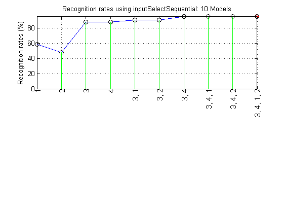
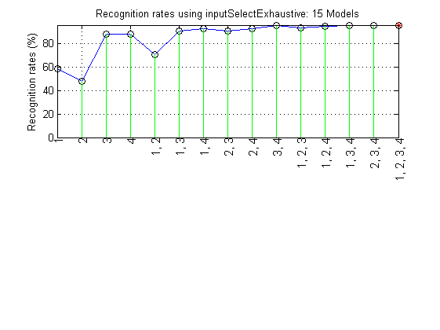
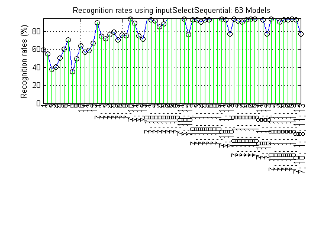
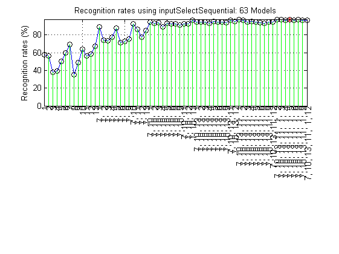

Feature Selection for Data Classification
The goal of feature selection or input selection in pattern recognition is to select the most influential features (inputs) from the original feature set for constructing a classifier that gives better performance. Through the process of feature selection, we can potentially accomplish the following tasks:
- The recognition rate is improved.
- Less computing power is needed for constructing the classifier.
- The selected features can help us understand the causal relationship between features and classes.
Contents
Sequential forward selection (SFS)
In general, there is no efficient way of direct optimum feature selection. Hence we usually rely on some heuristics to overcome the complexity of exhaustive search. Sequential forward selection (SFS) proposed by Whitney in 1971 is one of the commonly used heuristic methods for feature selection. It involves the following steps:
- Use KNNC as the classifier, and the leave-one-out test for recognition rate estimate.
- Select the first feature that has the highest LOO recognition rate among all features.
- Select the feature, among all unselected features, together with the selected features that gives the highest recognition rate.
- Repeat the previous process until you have selected enough number of features, or until the recognition rate is good enough.
Let us take the Iris dataset for example. There are 150 entries in the Iris dataset with 4 features and 3 categories. The result of SFS on the Iris dataset using the function inputSelectSequential.m is shown in the next example:
DS=prData('iris');
inputNum=size(DS.input, 1);
DS.inputName=cellstr(int2str((1:inputNum)'));
inputSelectSequential(DS);
Construct 10 KNN models, each with up to 4 inputs selected from 4 candidates...
Selecting input 1:
Model 1/10: selected={1} => Recog. rate = 58.7%
Model 2/10: selected={2} => Recog. rate = 48.0%
Model 3/10: selected={3} => Recog. rate = 88.0%
Model 4/10: selected={4} => Recog. rate = 88.0%
Currently selected inputs: 3
Selecting input 2:
Model 5/10: selected={3, 1} => Recog. rate = 90.7%
Model 6/10: selected={3, 2} => Recog. rate = 90.7%
Model 7/10: selected={3, 4} => Recog. rate = 95.3%
Currently selected inputs: 3, 4
Selecting input 3:
Model 8/10: selected={3, 4, 1} => Recog. rate = 95.3%
Model 9/10: selected={3, 4, 2} => Recog. rate = 95.3%
Currently selected inputs: 3, 4, 1
Selecting input 4:
Model 10/10: selected={3, 4, 1, 2} => Recog. rate = 96.0%
Currently selected inputs: 3, 4, 1, 2
Overall maximal recognition rate = 96.0%.
Selected 4 inputs (out of 4): 3, 4, 1, 2
 From the above plot, the selected features are {1}, {2}, {3}, {4}, {3,1}, {3,2}, {3,4}, {3,4,1}, {3,4,2}, {3,4,1,2} during the SFS proecess. Note that one a feature is put into the selected set, it stays in the set throughout the selection process.
Exhaustive search
On the other hand, we can use the function inputSelectExhaustive.m to perform exhaustive search for feature selection on the Iris dataset:
DS=prData('iris');
inputNum=size(DS.input, 1);
DS.inputName=cellstr(int2str((1:inputNum)'));
inputSelectExhaustive(DS);
Construct 15 KNN models, each with up to 4 inputs selected from 4 candidates...
modelIndex 1/15: selected={1} => Recog. rate = 58.666667%
modelIndex 2/15: selected={2} => Recog. rate = 48.000000%
modelIndex 3/15: selected={3} => Recog. rate = 88.000000%
modelIndex 4/15: selected={4} => Recog. rate = 88.000000%
modelIndex 5/15: selected={1, 2} => Recog. rate = 70.666667%
modelIndex 6/15: selected={1, 3} => Recog. rate = 90.666667%
modelIndex 7/15: selected={1, 4} => Recog. rate = 92.666667%
modelIndex 8/15: selected={2, 3} => Recog. rate = 90.666667%
modelIndex 9/15: selected={2, 4} => Recog. rate = 92.666667%
modelIndex 10/15: selected={3, 4} => Recog. rate = 95.333333%
modelIndex 11/15: selected={1, 2, 3} => Recog. rate = 93.333333%
modelIndex 12/15: selected={1, 2, 4} => Recog. rate = 94.666667%
modelIndex 13/15: selected={1, 3, 4} => Recog. rate = 95.333333%
modelIndex 14/15: selected={2, 3, 4} => Recog. rate = 95.333333%
modelIndex 15/15: selected={1, 2, 3, 4} => Recog. rate = 96.000000%
Overall max recognition rate = 96.0%.
Selected 4 inputs (out of 4): 1, 2, 3, 4
 In this example, the selected features are {1}, {2}, {3}, {4}, {1, 2}, {1, 3}, {1, 4}, {2, 3}, {2, 4}, {3, 4}, {1, 2, 3}, {1, 2, 4}, {1, 3, 4}, {2, 3, 4}, {1, 2, 3, 4}. In general, the exhaustive search needs to perform 2dim-1 leave-one-out tests in order to find the best features.
In the above two examples, the optimum recognition rate occurs when all features are selected. However, this is not the general case since sometimes we only need to use a subset of features to outperform the use of all features. The following example demonstrates that we only need 3 features to achieve the maximum recognition rate when the number of allowable features are 6.
DS=prData('wine');
inputNum=size(DS.input, 1);
DS.inputName=cellstr(int2str((1:inputNum)'));
inputSelectSequential(DS, 6);
Construct 63 KNN models, each with up to 6 inputs selected from 13 candidates...
Selecting input 1:
Model 1/63: selected={ 1} => Recog. rate = 59.6%
Model 2/63: selected={ 2} => Recog. rate = 55.1%
Model 3/63: selected={ 3} => Recog. rate = 37.6%
Model 4/63: selected={ 4} => Recog. rate = 40.4%
Model 5/63: selected={ 5} => Recog. rate = 50.0%
Model 6/63: selected={ 6} => Recog. rate = 60.1%
Model 7/63: selected={ 7} => Recog. rate = 70.8%
Model 8/63: selected={ 8} => Recog. rate = 35.4%
Model 9/63: selected={ 9} => Recog. rate = 49.4%
Model 10/63: selected={10} => Recog. rate = 64.0%
Model 11/63: selected={11} => Recog. rate = 56.7%
Model 12/63: selected={12} => Recog. rate = 58.4%
Model 13/63: selected={13} => Recog. rate = 66.9%
Currently selected inputs: 7
Selecting input 2:
Model 14/63: selected={ 7, 1} => Recog. rate = 89.3%
Model 15/63: selected={ 7, 2} => Recog. rate = 74.7%
Model 16/63: selected={ 7, 3} => Recog. rate = 71.9%
Model 17/63: selected={ 7, 4} => Recog. rate = 76.4%
Model 18/63: selected={ 7, 5} => Recog. rate = 79.2%
Model 19/63: selected={ 7, 6} => Recog. rate = 70.8%
Model 20/63: selected={ 7, 8} => Recog. rate = 75.8%
Model 21/63: selected={ 7, 9} => Recog. rate = 75.3%
Model 22/63: selected={ 7, 10} => Recog. rate = 93.3%
Model 23/63: selected={ 7, 11} => Recog. rate = 88.8%
Model 24/63: selected={ 7, 12} => Recog. rate = 75.3%
Model 25/63: selected={ 7, 13} => Recog. rate = 71.3%
Currently selected inputs: 7, 10
Selecting input 3:
Model 26/63: selected={ 7, 10, 1} => Recog. rate = 93.8%
Model 27/63: selected={ 7, 10, 2} => Recog. rate = 92.7%
Model 28/63: selected={ 7, 10, 3} => Recog. rate = 91.6%
Model 29/63: selected={ 7, 10, 4} => Recog. rate = 84.8%
Model 30/63: selected={ 7, 10, 5} => Recog. rate = 88.2%
Model 31/63: selected={ 7, 10, 6} => Recog. rate = 93.8%
Model 32/63: selected={ 7, 10, 8} => Recog. rate = 93.8%
Model 33/63: selected={ 7, 10, 9} => Recog. rate = 93.8%
Model 34/63: selected={ 7, 10, 11} => Recog. rate = 93.8%
Model 35/63: selected={ 7, 10, 12} => Recog. rate = 93.3%
Model 36/63: selected={ 7, 10, 13} => Recog. rate = 76.4%
Currently selected inputs: 7, 10, 1
Selecting input 4:
Model 37/63: selected={ 7, 10, 1, 2} => Recog. rate = 92.7%
Model 38/63: selected={ 7, 10, 1, 3} => Recog. rate = 92.7%
Model 39/63: selected={ 7, 10, 1, 4} => Recog. rate = 90.4%
Model 40/63: selected={ 7, 10, 1, 5} => Recog. rate = 92.7%
Model 41/63: selected={ 7, 10, 1, 6} => Recog. rate = 92.7%
Model 42/63: selected={ 7, 10, 1, 8} => Recog. rate = 93.8%
Model 43/63: selected={ 7, 10, 1, 9} => Recog. rate = 93.8%
Model 44/63: selected={ 7, 10, 1, 11} => Recog. rate = 93.3%
Model 45/63: selected={ 7, 10, 1, 12} => Recog. rate = 92.7%
Model 46/63: selected={ 7, 10, 1, 13} => Recog. rate = 77.0%
Currently selected inputs: 7, 10, 1, 8
Selecting input 5:
Model 47/63: selected={ 7, 10, 1, 8, 2} => Recog. rate = 93.3%
Model 48/63: selected={ 7, 10, 1, 8, 3} => Recog. rate = 91.6%
Model 49/63: selected={ 7, 10, 1, 8, 4} => Recog. rate = 90.4%
Model 50/63: selected={ 7, 10, 1, 8, 5} => Recog. rate = 92.7%
Model 51/63: selected={ 7, 10, 1, 8, 6} => Recog. rate = 93.3%
Model 52/63: selected={ 7, 10, 1, 8, 9} => Recog. rate = 93.3%
Model 53/63: selected={ 7, 10, 1, 8, 11} => Recog. rate = 93.8%
Model 54/63: selected={ 7, 10, 1, 8, 12} => Recog. rate = 92.7%
Model 55/63: selected={ 7, 10, 1, 8, 13} => Recog. rate = 77.0%
Currently selected inputs: 7, 10, 1, 8, 11
Selecting input 6:
Model 56/63: selected={ 7, 10, 1, 8, 11, 2} => Recog. rate = 93.3%
Model 57/63: selected={ 7, 10, 1, 8, 11, 3} => Recog. rate = 93.8%
Model 58/63: selected={ 7, 10, 1, 8, 11, 4} => Recog. rate = 89.9%
Model 59/63: selected={ 7, 10, 1, 8, 11, 5} => Recog. rate = 92.7%
Model 60/63: selected={ 7, 10, 1, 8, 11, 6} => Recog. rate = 92.7%
Model 61/63: selected={ 7, 10, 1, 8, 11, 9} => Recog. rate = 93.3%
Model 62/63: selected={ 7, 10, 1, 8, 11, 12} => Recog. rate = 92.7%
Model 63/63: selected={ 7, 10, 1, 8, 11, 13} => Recog. rate = 77.0%
Currently selected inputs: 7, 10, 1, 8, 11, 3
Overall maximal recognition rate = 93.8%.
Selected 3 inputs (out of 13): 7, 10, 1
 Moreover, we can observe that whenever feature 13 is selected, the recognition rate will drop. This observation reminds us that the range of feature 13 might be very different from those of other features. As a result, we need to normalize the features before conducting feature selection, as shown in the next example.
DS=prData('wine'); inputNum=size(DS.input, 1); DS.inputName=cellstr(int2str((1:inputNum)')); DS.input=inputNormalize(DS.input); % Feature normalization inputSelectSequential(DS, 6);
Construct 63 KNN models, each with up to 6 inputs selected from 13 candidates...
Selecting input 1:
Model 1/63: selected={ 1} => Recog. rate = 57.9%
Model 2/63: selected={ 2} => Recog. rate = 56.2%
Model 3/63: selected={ 3} => Recog. rate = 37.6%
Model 4/63: selected={ 4} => Recog. rate = 39.3%
Model 5/63: selected={ 5} => Recog. rate = 50.0%
Model 6/63: selected={ 6} => Recog. rate = 60.1%
Model 7/63: selected={ 7} => Recog. rate = 69.7%
Model 8/63: selected={ 8} => Recog. rate = 35.4%
Model 9/63: selected={ 9} => Recog. rate = 48.9%
Model 10/63: selected={10} => Recog. rate = 64.0%
Model 11/63: selected={11} => Recog. rate = 56.2%
Model 12/63: selected={12} => Recog. rate = 58.4%
Model 13/63: selected={13} => Recog. rate = 67.4%
Currently selected inputs: 7
Selecting input 2:
Model 14/63: selected={ 7, 1} => Recog. rate = 89.3%
Model 15/63: selected={ 7, 2} => Recog. rate = 74.2%
Model 16/63: selected={ 7, 3} => Recog. rate = 73.6%
Model 17/63: selected={ 7, 4} => Recog. rate = 77.5%
Model 18/63: selected={ 7, 5} => Recog. rate = 87.6%
Model 19/63: selected={ 7, 6} => Recog. rate = 71.3%
Model 20/63: selected={ 7, 8} => Recog. rate = 73.0%
Model 21/63: selected={ 7, 9} => Recog. rate = 75.8%
Model 22/63: selected={ 7, 10} => Recog. rate = 92.7%
Model 23/63: selected={ 7, 11} => Recog. rate = 86.5%
Model 24/63: selected={ 7, 12} => Recog. rate = 77.5%
Model 25/63: selected={ 7, 13} => Recog. rate = 84.8%
Currently selected inputs: 7, 10
Selecting input 3:
Model 26/63: selected={ 7, 10, 1} => Recog. rate = 94.4%
Model 27/63: selected={ 7, 10, 2} => Recog. rate = 93.3%
Model 28/63: selected={ 7, 10, 3} => Recog. rate = 93.8%
Model 29/63: selected={ 7, 10, 4} => Recog. rate = 89.3%
Model 30/63: selected={ 7, 10, 5} => Recog. rate = 93.3%
Model 31/63: selected={ 7, 10, 6} => Recog. rate = 92.7%
Model 32/63: selected={ 7, 10, 8} => Recog. rate = 92.7%
Model 33/63: selected={ 7, 10, 9} => Recog. rate = 91.6%
Model 34/63: selected={ 7, 10, 11} => Recog. rate = 92.7%
Model 35/63: selected={ 7, 10, 12} => Recog. rate = 92.7%
Model 36/63: selected={ 7, 10, 13} => Recog. rate = 96.6%
Currently selected inputs: 7, 10, 13
Selecting input 4:
Model 37/63: selected={ 7, 10, 13, 1} => Recog. rate = 94.9%
Model 38/63: selected={ 7, 10, 13, 2} => Recog. rate = 94.9%
Model 39/63: selected={ 7, 10, 13, 3} => Recog. rate = 94.4%
Model 40/63: selected={ 7, 10, 13, 4} => Recog. rate = 93.3%
Model 41/63: selected={ 7, 10, 13, 5} => Recog. rate = 95.5%
Model 42/63: selected={ 7, 10, 13, 6} => Recog. rate = 94.9%
Model 43/63: selected={ 7, 10, 13, 8} => Recog. rate = 94.9%
Model 44/63: selected={ 7, 10, 13, 9} => Recog. rate = 93.8%
Model 45/63: selected={ 7, 10, 13, 11} => Recog. rate = 96.6%
Model 46/63: selected={ 7, 10, 13, 12} => Recog. rate = 95.5%
Currently selected inputs: 7, 10, 13, 11
Selecting input 5:
Model 47/63: selected={ 7, 10, 13, 11, 1} => Recog. rate = 97.2%
Model 48/63: selected={ 7, 10, 13, 11, 2} => Recog. rate = 96.6%
Model 49/63: selected={ 7, 10, 13, 11, 3} => Recog. rate = 94.4%
Model 50/63: selected={ 7, 10, 13, 11, 4} => Recog. rate = 95.5%
Model 51/63: selected={ 7, 10, 13, 11, 5} => Recog. rate = 94.9%
Model 52/63: selected={ 7, 10, 13, 11, 6} => Recog. rate = 93.8%
Model 53/63: selected={ 7, 10, 13, 11, 8} => Recog. rate = 93.3%
Model 54/63: selected={ 7, 10, 13, 11, 9} => Recog. rate = 94.9%
Model 55/63: selected={ 7, 10, 13, 11, 12} => Recog. rate = 94.9%
Currently selected inputs: 7, 10, 13, 11, 1
Selecting input 6:
Model 56/63: selected={ 7, 10, 13, 11, 1, 2} => Recog. rate = 97.2%
Model 57/63: selected={ 7, 10, 13, 11, 1, 3} => Recog. rate = 97.2%
Model 58/63: selected={ 7, 10, 13, 11, 1, 4} => Recog. rate = 96.6%
Model 59/63: selected={ 7, 10, 13, 11, 1, 5} => Recog. rate = 97.8%
Model 60/63: selected={ 7, 10, 13, 11, 1, 6} => Recog. rate = 96.6%
Model 61/63: selected={ 7, 10, 13, 11, 1, 8} => Recog. rate = 97.2%
Model 62/63: selected={ 7, 10, 13, 11, 1, 9} => Recog. rate = 96.6%
Model 63/63: selected={ 7, 10, 13, 11, 1, 12} => Recog. rate = 96.6%
Currently selected inputs: 7, 10, 13, 11, 1, 5
Overall maximal recognition rate = 97.8%.
Selected 6 inputs (out of 13): 7, 10, 13, 11, 1, 5
 The only difference between this example and the previous one is that the features are normalized, which enhances the recognition rate from 93.8% to 97.8%. This demonstrates the importance of input (feature) normalization. In fact, by using exhaustive search on all features, we can achieve a recognition rate of 99.4% based on the selected features {1, 3, 4, 9, 10, 11, 12, 13}, after conducting 8191 LOO tests. However, it should be noted that input (feature) normalization does not guarantee improvement. As a result, it is always a good practice to try both the original and the normalized datasets for a given choice of classifier.
Reference
A. Whitney, "A direct method of nonparametric measurement slection", IEEE Trans. Comput., vol. 20, pp.1100-1103, 1971.
Copyright 2011-2012 Jyh-Shing Roger Jang.